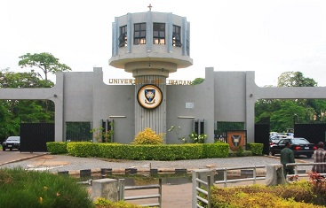
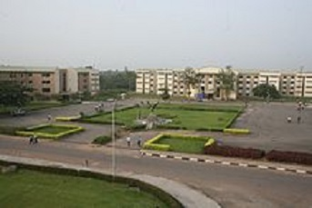
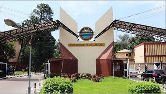
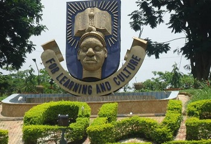

University of Ibadan
content October 15, 2023
The University Of Ibadan (UI) is located in Ibadan, the capital of Oyo state. The college has undergraduate
and graduate arts, sciences, and pharmacy programs. Moreover, the college offers education, social sciences,
law, medicine, and engineering programs....
Read more >>

Covenant University
Posted October 5, 2023
Covenant University was established in 2002 by the World Mission Agency and the Living Faith Church
Worldwide. It is a private Pentecostal Christian university located in Ota, Nigeria.The university is
organised into four colleges: the College of Business and Social Sciences; College of Leadership and
Development Studies; College of Engineering, and the College of Science and Technology. Each college offers a
range of degree programmes and vocational courses.
Read more >>

University of Lagos
Posted October 5, 2023
The University of Lagos was founded in 1962 and has three campuses in Lagos, the nation’s commercial capital.
These are: the Main Campus at Akoka (which is largely surrounded by the scenic view of the Lagos lagoon), the
School of Radiography at Yaba, and its College of Medicine, at Idi-Araba, Surulere.
Read
more >>

Obafemi Awolowo University
Posted October 5, 2023
Obafemi Awolowo University, Ile-Ife is one of three Universities established in Nigeria between 1961 and 1962
as a result of the report submitted to the Federal Government in September, 1960, by a Commission it appointed
in April 1959 under the Chairmanship of Sir Eric Ashby, Master of Clare College, Cambridge, to survey the
needs of post-secondary and higher education in Nigeria over the next twenty years.
Read more >>